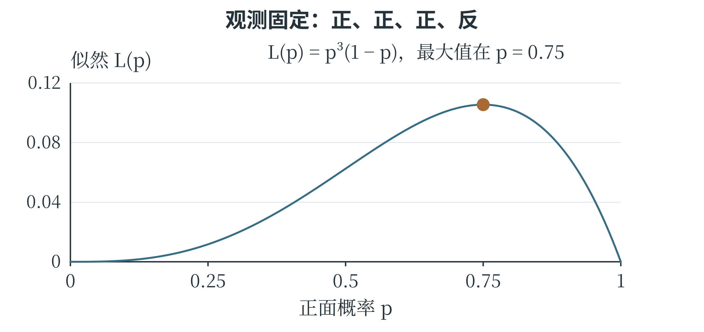

6.4 概率建模与统计推断
从数据推测未知规律
第三章在已知概率条件下计算事件发生的可能性。实际建模常要反过来：观察了一批结果，希望推测产生这些结果的概率或参数。根据样本对未知总体或规律作出推断，称为统计推断。推断依靠数据，也依靠假设；假设与数据产生过程不符时，计算再准确也可能回答了错误的问题。例如，一枚硬币的正面概率未知，用 \(p\) 表示。假设各次投掷相互独立，且正面概率保持不变，观察到四次结果依次为“正、正、正、反”。如果暂取 \(p=0.5\)，这串结果出现的概率是 \(0.5^3\times0.5=0.0625\)；若取 \(p=0.75\)，概率是 \(0.75^3\times0.25\approx0.1055\)。后一个参数使已观察到的结果更容易出现。
最大似然估计
把数据固定，比较不同参数使这份数据出现的可能性，这个关于参数的函数称为似然函数。对上面的具体结果序列，似然为 \(L(p)=p^3(1-p)\)。选择使似然最大的参数，称为最大似然估计。在这个例子中，最大值出现在 \(p=3/4\)，恰好等于正面次数除以总次数。
同一个式子，计算角度发生了变化：概率问题是“给定参数，结果有多可能”；似然问题是“已经看到结果，哪个参数更能解释它”。似然不是参数本身的概率分布，不能把 \(L(0.75)\approx0.1055\) 解释为“正面概率等于 0.75 的概率是 10.55%”。
若只记录四次中出现三次正面，不区分先后，似然还要乘组合数 4，但这个因子与 \(p\) 无关，不影响使它最大的参数。
最大似然给出的是基于这份数据的估计。只投四次，估计可能很不稳定；即使四次都是正面，估计为 1，也不能据此证明反面永远不会出现。增加符合条件的观测，通常能够提供更多信息。
计算似然时，取对数可以把相乘变成相加，由于对数在正数范围内保持大小顺序，最大化正似然与最大化对数似然得到相同的最优参数。这使很多概率模型更便于计算。最小二乘与最大似然并非毫无联系。在假设数值误差相互独立、服从均值为零且方差相同的正态分布时，寻找预测模型参数的最大似然解，可以转化为最小化误差平方和。这里的联系依赖具体的误差模型，并不表示所有最大似然问题都是最小二乘问题。
用曲线区分似然与概率
把 \(p\) 从 0 到 1 依次代入 \(L(p)=p^3(1-p)\)，可以画出图 6-7。横轴表示正在尝试的参数值，纵轴表示这份固定观测序列在该参数下的似然。\(p\) 为 0 或 1 时，似然都为零：前者不允许出现正面，后者不允许出现反面，而这份资料恰好两者都有。

取 \(p=0.25\)，似然约为 0.0117；取 0.5，似然为 0.0625；取 0.75，约为 0.1055；再提高到 0.9，似然下降到 0.0729。参数并非越大越好，因为记录中还有一次反面。曲线的最高点表示对当前记录最有利的参数，并不是“最可能出现的下一次投掷结果”。下一次的结果只有正、反两个，而参数是一种描述产生结果的规则。
可以先用一组候选值进行数值比较：
candidates = [i / 20 for i in range(21)]
def likelihood(p):
return p ** 3 * (1 - p)
best = max(candidates, key=likelihood)
print(best) # 0.75
程序只比较列出的 21 个候选，说明其中 0.75 最好；连续区间上的最大值还需要进一步的数学依据，第 6.6 节会用导数验证。离散候选搜索与连续求解在这里相互配合，不能把“试过的里面最好”直接当成任何问题中的全局最优证明。
贝叶斯定理怎样更新判断
最大似然着重比较数据在不同参数下的可能性。贝叶斯方法还把观察前已有的判断与新证据结合起来。第三章的条件概率说明，\(P(A\mid B)\) 与 \(P(B\mid A)\) 的条件位置不同；贝叶斯定理给出两者之间的关系，在 \(P(B)>0\) 时：
\(P(A)\) 是看到证据 B 之前 A 的概率，称为先验概率；\(P(A\mid B)\) 是看到 B 之后的条件概率，称为后验概率；\(P(B\mid A)\) 说明如果 A 成立，证据 B 有多大可能出现。分母 \(P(B)\) 对结果进行归一化，使后验概率具有正确的总量。继续看图片识别。假设一批图片中猫占 20%，非猫占 80%；模型将猫判成“猫”的比例为 90%，将非猫误判成“猫”的比例为 10%。从这批图片中等可能抽取一张，设 A 表示实际是猫，B 表示模型判为猫。B 可以通过两条互斥途径发生：猫被正确识别，或者非猫被误识别。因此：
这与从 100 张图片中数出 18 张正确识别、8 张误识别，再算 \(18/26\) 是同一个道理。即使模型识别猫的能力保持不变，若换到猫极少的一批图片，被判为猫的结果中，误报占比也可能更高。先验比例与识别能力一起影响后验判断。贝叶斯定理是概率关系，本身不会保证输入的概率可靠。先验可能来自历史统计或领域知识，识别率也应来自适当评价；使用条件改变后，需要重新检查它们是否仍然适用。
新证据怎样接着修正旧判断
贝叶斯更新还可以连续进行。假设袋中有两种可能的硬币，实际拿到哪一种尚不知道。甲硬币的正面概率为 0.5，乙硬币为 0.75；取到两种硬币的先验概率各为 0.5。我们选定一枚后连续投掷，假设在硬币种类确定的条件下，各次结果相互独立。第一次出现正面。对于“拿到甲且投出正面”，概率为 \(0.5\times0.5=0.25\)；对于“拿到乙且投出正面”，概率为 \(0.5\times0.75=0.375\)。二者加起来为 0.625，所以看到这个正面以后，拿到乙的后验概率为 \(0.375/0.625=0.6\)，拿到甲的后验概率为 0.4。正面更符合乙的特点，判断便向乙移动了一些。
第二次又是正面。此时把刚得到的 0.4、0.6 当作更新前的判断，分别乘两种硬币出现正面的概率，得到 0.2、0.45，再除以总和 0.65。拿到乙的后验概率变为 \(0.45/0.65=9/13\)，约为 69.2%。如果把两次正面一起计算，也会得到同样的结果：
现在第三次出现反面。甲硬币出反面的概率为 0.5，乙为 0.25，这个证据更有利于甲。把前一步的后验再次更新，乙的概率成为
表 6-2 同一枚硬币的连续观测与判断
| 已观察结果 | 拿到甲的概率 | 拿到乙的概率 |
|---|---|---|
| 尚未投掷 | 1/2 | 1/2 |
| 正 | 2/5 | 3/5 |
| 正、正 | 4/13 | 9/13 |
| 正、正、反 | 8/17 | 9/17 |
新证据也可能让原先较强的判断回落。
每一步更新都保留已经看过的材料，再结合新材料作调整。“乙的概率为 9/17”仍然是在这两种候选硬币与给定先验下的判断；如果袋中还可能有第三种硬币，模型就应把它也纳入比较。